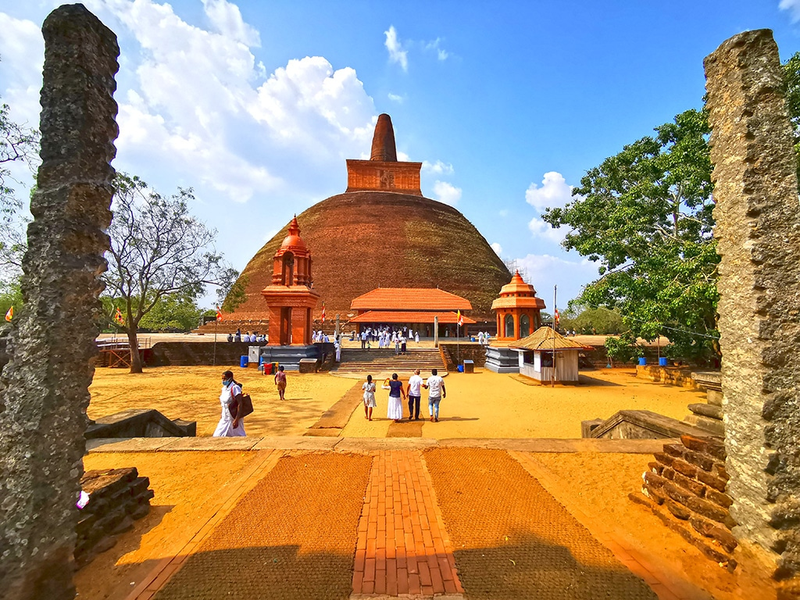

The sprawling monastic complex that served as a global center of Buddhist learning for over six centuries.
Established in the 1st century BC by King Valagamba, Abhayagiri was not just a monastery but a massive university complex that at its peak housed over 5,000 monks. It was famous for its more progressive schools of Buddhist thought and its international connections with China and India.
The Abhayagiri Dagoba itself is a massive brick monument, second only to Jetavanaramaya in size. The complex is also home to the famous Moonstone (Sandakada Pahana) and the Eth Pokuna (Elephant Pond), which show the incredible architectural and hydraulic sophistication of the era.
Back to Anuradhapura Hub